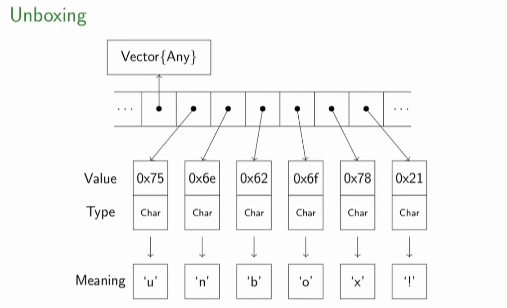

typeof([])2025-03-04
Vector{Any} (alias for Array{Any, 1})
Problem:
MethodInstance for Main.Notebook.f(::Int64)
from f(n) @ Main.Notebook ~/Repositories/PMLJ25/01_julia_intro/julia_intro_part3.qmd:181
Arguments
#self#::Core.Const(Main.Notebook.f)
n::Int64
Body::Any
1 ─ %1 = Main.Notebook.:+::Core.Const(+)
│ %2 = (%1)(n, Main.Notebook.x)::Any
└── return %2
Solution:
MyStruct(1)MethodInstance for Main.Notebook.f(::MyNumber)
from f(number::Main.Notebook.MyNumber) @ Main.Notebook ~/Repositories/PMLJ25/01_julia_intro/julia_intro_part3.qmd:454
Arguments
#self#::Core.Const(Main.Notebook.f)
number::Main.Notebook.MyNumber
Body::Any
1 ─ %1 = Main.Notebook.:+::Core.Const(+)
│ %2 = Main.Notebook.:^::Core.Const(^)
│ %3 = Base.getproperty(number, :val)::Number
│ %4 = Core.apply_type(Base.Val, 2)::Core.Const(Val{2})
│ %5 = (%4)()::Core.Const(Val{2}())
│ %6 = Base.literal_pow(%2, %3, %5)::Any
│ %7 = Main.Notebook.sqrt::Core.Const(sqrt)
│ %8 = Base.getproperty(number, :val)::Number
│ %9 = (%7)(%8)::Any
│ %10 = (%1)(%6, %9)::Any
└── return %10
MethodInstance for Main.Notebook.f(::MyNumConcrete)
from f(num::Main.Notebook.MyNumConcrete) @ Main.Notebook ~/Repositories/PMLJ25/01_julia_intro/julia_intro_part3.qmd:472
Arguments
#self#::Core.Const(Main.Notebook.f)
num::Main.Notebook.MyNumConcrete
Body::Float64
1 ─ %1 = Main.Notebook.:+::Core.Const(+)
│ %2 = Main.Notebook.:^::Core.Const(^)
│ %3 = Base.getproperty(num, :val)::Float64
│ %4 = Core.apply_type(Base.Val, 2)::Core.Const(Val{2})
│ %5 = (%4)()::Core.Const(Val{2}())
│ %6 = Base.literal_pow(%2, %3, %5)::Float64
│ %7 = Main.Notebook.sqrt::Core.Const(sqrt)
│ %8 = Base.getproperty(num, :val)::Float64
│ %9 = (%7)(%8)::Float64
│ %10 = (%1)(%6, %9)::Float64
└── return %10
f(num::MyNumParametric) = num.val^2 + sqrt(num.val)
num = MyNumParametric(3.0)
@code_warntype f(num)MethodInstance for Main.Notebook.f(::MyNumParametric{Float64})
from f(num::Main.Notebook.MyNumParametric) @ Main.Notebook ~/Repositories/PMLJ25/01_julia_intro/julia_intro_part3.qmd:490
Arguments
#self#::Core.Const(Main.Notebook.f)
num::Main.Notebook.MyNumParametric{Float64}
Body::Float64
1 ─ %1 = Main.Notebook.:+::Core.Const(+)
│ %2 = Main.Notebook.:^::Core.Const(^)
│ %3 = Base.getproperty(num, :val)::Float64
│ %4 = Core.apply_type(Base.Val, 2)::Core.Const(Val{2})
│ %5 = (%4)()::Core.Const(Val{2}())
│ %6 = Base.literal_pow(%2, %3, %5)::Float64
│ %7 = Main.Notebook.sqrt::Core.Const(sqrt)
│ %8 = Base.getproperty(num, :val)::Float64
│ %9 = (%7)(%8)::Float64
│ %10 = (%1)(%6, %9)::Float64
└── return %10
When the function is mutating the name ends with an exclamation point:
(::Main.Notebook.var"#_fclose#1") (generic function with 1 method)"00000011"